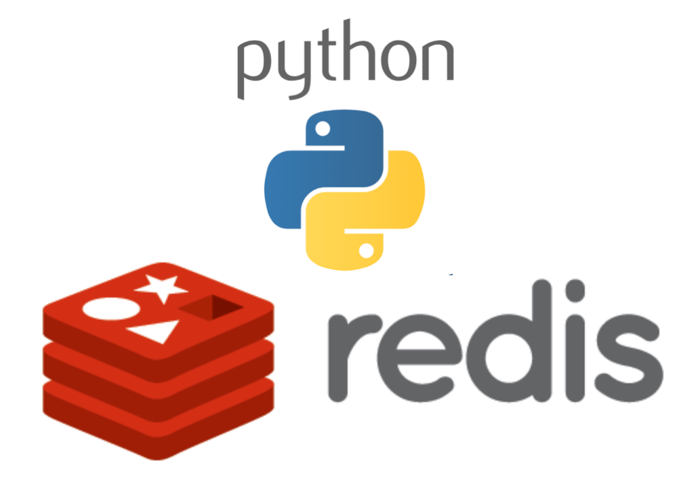

Code
docker run -d --name redis-stack -p 6379:6379 -p 8001:8001 redis/redis-stack:latestAshwin Ramesh
May 19, 2024

In financial markets, tick data refers to the detailed record of every trade executed on an exchange. In liquid markets, where thousands of trades occur every second, transmitting and processing this high-frequency data can be computationally intensive. Even if the data is available, retail traders do not have the resources to leverage it effectively for real-time decision-making. To address this challenge, exchanges and brokers often provide aggregated price information to their clients.
For medium-frequency trading (MFT) and low-frequency trading (LFT), the aggregated price data needs to be further subsampled to generate OHLC (open, high, low, close) candles. However, managing different timeframes for multiple tickers can be complex and challenging to optimize. In this blog post, we will explore an efficient approach that utilizes native Redis features, such as Redis Timeseries, Compaction and Key-Space notifications which we will cover in detail.
Redis is a versatile in-memory key-value store. It can not only be used to store key-value pairs but also has a plethora of plugins which make it capable of handling various data types and use cases. Redis can also be extended to work with relational data using Redis OM (Object Mapping).
Other notable features of Redis include built-in support for data structures like lists, sets, sorted sets, hashes, streams and powerful pub/sub messaging capabilities. These features, combined with its in-memory storage and high performance, make Redis a go-to choice for caching.
Redis serves as a caching layer where all the aggregated price data is cached. Since this is time-series data, we can use Redis Timeseries to store and query the data efficiently. Redis Timeseries is a simple key-value store, but the keys are timestamps and the values are price data (the value can be any relevant information). Once the data is ingested into Redis, we can create rules to subsample the data into 1m, 3m, 15m, 1h, and 1d OHLC (Open, High, Low, Close) candles. This process utilizes compaction, which automatically subsamples data based on specified aggregation functions such as sum, avg, min, max, first, last, etc.
To create a candle for a specific timeframe, we need to define four rules with the respective aggregation functions: open (first), high (max), low (min), and close (last). By creating these rules, we can generate candles of different timeframes and store them in the cache.
The next challenge is to efficiently process the candle data as soon as it is generated. A naive approach would be to use a while loop with a sleep interval equivalent to the required timeframe and query the latest data in each iteration. However, a more optimized approach is to use Keyspace notifications. With this feature, Redis sends a notification whenever any changes occur in a specified key. By subscribing to these notifications, we can efficiently query Redis only when a new candle is available, eliminating the need for constant polling.
Note: you may need to restart the kernel to use updated packages.import time, datetime, random
from pytz import timezone
from redis_timeseries_manager import RedisTimeseriesManager
settings = {
'host': 'localhost',
'port': 6379,
'db': 0,
'password': None,
}
class MarketData(RedisTimeseriesManager):
_name = 'markets'
_lines = ['open', 'high', 'low', 'close']
_timeframes = {
'raw': {'retention_secs': 60*60*24*4}, # retention 4 days
'1m': {'retention_secs': 60*60*24*7, 'bucket_size_secs': 60}, # retention 7 day; timeframe 60 secs
'3m': {'retention_secs': 60*60*24*7, 'bucket_size_secs': 60*3}, # retention 7 day; timeframe 180 secs
'1h': {'retention_secs': 60*60*24*30, 'bucket_size_secs': 60*60}, # retention 1 month; timeframe 3600 secs
'1d': {'retention_secs': 60*60*24*365, 'bucket_size_secs': 60*60*24}, # retention 1 year; timeframe 86400 secs
}
#compaction rules
def _create_rule(self, c1:str, c2:str, line:str, timeframe_name:str, timeframe_specs:str, source_key:str, dest_key:str):
if line == 'open':
aggregation_type = 'first'
elif line == 'close':
aggregation_type = 'last'
elif line == 'high':
aggregation_type = 'max'
elif line == 'low':
aggregation_type = 'min'
else:
return
bucket_size_secs = timeframe_specs['bucket_size_secs']
self._set_rule(source_key, dest_key, aggregation_type, bucket_size_secs)
@staticmethod
def print_data(data):
for ts, open, high, low, close, volume in data:
print(f"{datetime.datetime.fromtimestamp(ts, tz=timezone('UTC')):%Y-%m-%d %H:%M:%S}, open: {open}, high: {high}, low: {low}, close: {close}, volume: {volume}")
md = MarketData(**settings)The MarketData class does the following:
Let us write a function to generate dummy data:
def generate_ticks():
secs = 500
tickers = [
("crypto", "btcusd", (28000, 29000)), # BTC
("crypto", "ethusd", (1800, 2000)), # ETH
("stocks", "aapl", (130, 140)), # Apple
("stocks", "amzn", (2300, 2400)), # Amazon
("stocks", "googl", (2200, 2300)), # Google
]
n_tickers = len(tickers)
sec = 0
names = [f"{t[0]}:{t[1]}" for t in tickers]
print(f"Generating random ticks for {secs}s: {names}")
while sec < secs:
ts = int(time.time())
for i in range(n_tickers):
c1, c2, price_range = tickers[i]
price = random.randint(*price_range)
# print(f"ts: {ts}, {c2.upper()}: {price}")
md.insert(
data=[[ts, price, price, price, price]],
c1=c1,
c2=c2,
create_inplace=True,
)
time.sleep(1)
sec += 1
# generate_ticks()The generate_ticks() function utilizes the MarketData class to insert randomly generated data into Redis. Alternatively, you can use the md.insert() method to insert real-time data received from the broker into Redis. Once the data is inserted, Redis automatically handles the subsampling process. It aggregates the data into various time intervals: 1-minute, 3-minute, 1-hour, and 1-day. Each subsampled dataset has a specific expiration period:
This automatic subsampling and expiration mechanism ensures efficient storage and retrieval of historical market data while maintaining the desired granularity for analysis and visualization purposes.
def handle_event(event):
# Handle your event here
print(event)
def subscribe_candle():
timeframes= ['1m', '3m']
tickers = [
("crypto", "btcusd", (28000, 29000)), # BTC
("crypto", "ethusd", (1800, 2000)), # ETH
("stocks", "aapl", (130, 140)), # Apple
("stocks", "amzn", (2300, 2400)), # Amazon
("stocks", "googl", (2200, 2300)), # Google
]
r = md.client
# Enabling keyspace events (https://redis.io/docs/latest/develop/use/keyspace-notifications/#configuration)
r.config_set('notify-keyspace-events', 'KEA')
# Subscribe to all the tickers using pubsub
pubsub = r.pubsub()
for timeframe in timeframes:
for ticker in tickers:
market, scrip, _ = ticker
key = f"__keyspace@0__:markets:{market}:{scrip}:{timeframe}:close"
pubsub.psubscribe(key)
print(f"Subscibed: {market}:{scrip}:{timeframe}")
for message in pubsub.listen():
if message.get("type") == "pmessage":
channel = message.get("channel").decode() # "__keyspace@0__:markets:stocks:amzn:1m:close"
parts = channel.split(":")
market = parts[2]
scrip = parts[3]
timeframe = parts[4]
# Once we have an event use read the latest record
data = md.read_last_n_records(
c1=market,
c2=scrip,
timeframe=timeframe,
# minimum_timestamp=0,
n=1,
)
ohlc = data[2][0][1:]
ts = data[2][0][0]
event = {
"ts": ts,
"market": market,
"scrip": scrip,
"ohlc": ohlc,
"tf": timeframe
}
handle_event(event)
# subscribe_candle()The above method subscribe_candle() sets up keyspace notifications and uses pub/sub to subscribe to the events. Now, we can listen to these events. Whenever there is an event, we can fetch the latest candle information using md.read_last_n_records() method. Code to handle the event can be written in handle_event() callback function.
Generating random ticks for 500s: ['crypto:btcusd', 'crypto:ethusd', 'stocks:aapl', 'stocks:amzn', 'stocks:googl']
Subscibed: crypto:btcusd:1m
Subscibed: crypto:ethusd:1m
Subscibed: stocks:aapl:1m
Subscibed: stocks:amzn:1m
Subscibed: stocks:googl:1m
Subscibed: crypto:btcusd:3m
Subscibed: crypto:ethusd:3m
Subscibed: stocks:aapl:3m
Subscibed: stocks:amzn:3m
Subscibed: stocks:googl:3m
{'ts': 1716178800.0, 'market': 'crypto', 'scrip': 'btcusd', 'ohlc': [28344.0, 29000.0, 28011.0, 28149.0], 'tf': '1m'}
{'ts': 1716178680.0, 'market': 'crypto', 'scrip': 'btcusd', 'ohlc': [28344.0, 29000.0, 28011.0, 28149.0], 'tf': '3m'}
{'ts': 1716178800.0, 'market': 'crypto', 'scrip': 'ethusd', 'ohlc': [1926.0, 1989.0, 1806.0, 1963.0], 'tf': '1m'}
{'ts': 1716178680.0, 'market': 'crypto', 'scrip': 'ethusd', 'ohlc': [1926.0, 1989.0, 1806.0, 1963.0], 'tf': '3m'}
{'ts': 1716178800.0, 'market': 'stocks', 'scrip': 'aapl', 'ohlc': [131.0, 140.0, 130.0, 139.0], 'tf': '1m'}
{'ts': 1716178680.0, 'market': 'stocks', 'scrip': 'aapl', 'ohlc': [131.0, 140.0, 130.0, 139.0], 'tf': '3m'}
{'ts': 1716178800.0, 'market': 'stocks', 'scrip': 'amzn', 'ohlc': [2392.0, 2398.0, 2300.0, 2381.0], 'tf': '1m'}
{'ts': 1716178680.0, 'market': 'stocks', 'scrip': 'amzn', 'ohlc': [2392.0, 2398.0, 2300.0, 2381.0], 'tf': '3m'}
{'ts': 1716178800.0, 'market': 'stocks', 'scrip': 'googl', 'ohlc': [2255.0, 2299.0, 2200.0, 2218.0], 'tf': '1m'}
{'ts': 1716178680.0, 'market': 'stocks', 'scrip': 'googl', 'ohlc': [2255.0, 2299.0, 2200.0, 2218.0], 'tf': '3m'}
{'ts': 1716178860.0, 'market': 'crypto', 'scrip': 'btcusd', 'ohlc': [28273.0, 28960.0, 28034.0, 28078.0], 'tf': '1m'}
{'ts': 1716178860.0, 'market': 'crypto', 'scrip': 'ethusd', 'ohlc': [1910.0, 1997.0, 1800.0, 1954.0], 'tf': '1m'}
{'ts': 1716178860.0, 'market': 'stocks', 'scrip': 'aapl', 'ohlc': [135.0, 140.0, 130.0, 135.0], 'tf': '1m'}
{'ts': 1716178860.0, 'market': 'stocks', 'scrip': 'amzn', 'ohlc': [2316.0, 2398.0, 2300.0, 2319.0], 'tf': '1m'}
{'ts': 1716178860.0, 'market': 'stocks', 'scrip': 'googl', 'ohlc': [2218.0, 2298.0, 2204.0, 2207.0], 'tf': '1m'}
{'ts': 1716178920.0, 'market': 'crypto', 'scrip': 'btcusd', 'ohlc': [28209.0, 28992.0, 28013.0, 28013.0], 'tf': '1m'}
{'ts': 1716178920.0, 'market': 'crypto', 'scrip': 'ethusd', 'ohlc': [1803.0, 1998.0, 1803.0, 1908.0], 'tf': '1m'}
{'ts': 1716178920.0, 'market': 'stocks', 'scrip': 'aapl', 'ohlc': [130.0, 140.0, 130.0, 132.0], 'tf': '1m'}
{'ts': 1716178920.0, 'market': 'stocks', 'scrip': 'amzn', 'ohlc': [2316.0, 2399.0, 2300.0, 2336.0], 'tf': '1m'}
{'ts': 1716178920.0, 'market': 'stocks', 'scrip': 'googl', 'ohlc': [2229.0, 2296.0, 2204.0, 2251.0], 'tf': '1m'}
{'ts': 1716178980.0, 'market': 'crypto', 'scrip': 'btcusd', 'ohlc': [28299.0, 28996.0, 28000.0, 28501.0], 'tf': '1m'}
{'ts': 1716178860.0, 'market': 'crypto', 'scrip': 'btcusd', 'ohlc': [28273.0, 28996.0, 28000.0, 28501.0], 'tf': '3m'}
{'ts': 1716178980.0, 'market': 'crypto', 'scrip': 'ethusd', 'ohlc': [1996.0, 1996.0, 1800.0, 1933.0], 'tf': '1m'}
{'ts': 1716178860.0, 'market': 'crypto', 'scrip': 'ethusd', 'ohlc': [1910.0, 1998.0, 1800.0, 1933.0], 'tf': '3m'}
{'ts': 1716178980.0, 'market': 'stocks', 'scrip': 'aapl', 'ohlc': [135.0, 140.0, 130.0, 132.0], 'tf': '1m'}
{'ts': 1716178860.0, 'market': 'stocks', 'scrip': 'aapl', 'ohlc': [135.0, 140.0, 130.0, 132.0], 'tf': '3m'}
{'ts': 1716178980.0, 'market': 'stocks', 'scrip': 'amzn', 'ohlc': [2371.0, 2399.0, 2301.0, 2359.0], 'tf': '1m'}
{'ts': 1716178860.0, 'market': 'stocks', 'scrip': 'amzn', 'ohlc': [2316.0, 2399.0, 2300.0, 2359.0], 'tf': '3m'}
{'ts': 1716178980.0, 'market': 'stocks', 'scrip': 'googl', 'ohlc': [2235.0, 2296.0, 2202.0, 2263.0], 'tf': '1m'}
{'ts': 1716178860.0, 'market': 'stocks', 'scrip': 'googl', 'ohlc': [2218.0, 2298.0, 2202.0, 2263.0], 'tf': '3m'}
{'ts': 1716179040.0, 'market': 'crypto', 'scrip': 'btcusd', 'ohlc': [28452.0, 29000.0, 28015.0, 28631.0], 'tf': '1m'}
{'ts': 1716179040.0, 'market': 'crypto', 'scrip': 'ethusd', 'ohlc': [1865.0, 2000.0, 1801.0, 1986.0], 'tf': '1m'}
{'ts': 1716179040.0, 'market': 'stocks', 'scrip': 'aapl', 'ohlc': [137.0, 140.0, 130.0, 136.0], 'tf': '1m'}
{'ts': 1716179040.0, 'market': 'stocks', 'scrip': 'amzn', 'ohlc': [2390.0, 2400.0, 2305.0, 2362.0], 'tf': '1m'}
{'ts': 1716179040.0, 'market': 'stocks', 'scrip': 'googl', 'ohlc': [2263.0, 2300.0, 2202.0, 2231.0], 'tf': '1m'}
{'ts': 1716179100.0, 'market': 'crypto', 'scrip': 'btcusd', 'ohlc': [28845.0, 29000.0, 28007.0, 28749.0], 'tf': '1m'}
{'ts': 1716179100.0, 'market': 'crypto', 'scrip': 'ethusd', 'ohlc': [1939.0, 1999.0, 1802.0, 1866.0], 'tf': '1m'}
{'ts': 1716179100.0, 'market': 'stocks', 'scrip': 'aapl', 'ohlc': [135.0, 140.0, 130.0, 138.0], 'tf': '1m'}
{'ts': 1716179100.0, 'market': 'stocks', 'scrip': 'amzn', 'ohlc': [2386.0, 2398.0, 2304.0, 2307.0], 'tf': '1m'}
{'ts': 1716179100.0, 'market': 'stocks', 'scrip': 'googl', 'ohlc': [2289.0, 2300.0, 2200.0, 2228.0], 'tf': '1m'}
{'ts': 1716179160.0, 'market': 'crypto', 'scrip': 'btcusd', 'ohlc': [28441.0, 28986.0, 28001.0, 28445.0], 'tf': '1m'}
{'ts': 1716179040.0, 'market': 'crypto', 'scrip': 'btcusd', 'ohlc': [28452.0, 29000.0, 28001.0, 28445.0], 'tf': '3m'}
{'ts': 1716179160.0, 'market': 'crypto', 'scrip': 'ethusd', 'ohlc': [1963.0, 2000.0, 1804.0, 1863.0], 'tf': '1m'}
{'ts': 1716179040.0, 'market': 'crypto', 'scrip': 'ethusd', 'ohlc': [1865.0, 2000.0, 1801.0, 1863.0], 'tf': '3m'}
{'ts': 1716179160.0, 'market': 'stocks', 'scrip': 'aapl', 'ohlc': [138.0, 140.0, 130.0, 132.0], 'tf': '1m'}
{'ts': 1716179040.0, 'market': 'stocks', 'scrip': 'aapl', 'ohlc': [137.0, 140.0, 130.0, 132.0], 'tf': '3m'}
{'ts': 1716179160.0, 'market': 'stocks', 'scrip': 'amzn', 'ohlc': [2375.0, 2395.0, 2301.0, 2349.0], 'tf': '1m'}
{'ts': 1716179040.0, 'market': 'stocks', 'scrip': 'amzn', 'ohlc': [2390.0, 2400.0, 2301.0, 2349.0], 'tf': '3m'}
{'ts': 1716179160.0, 'market': 'stocks', 'scrip': 'googl', 'ohlc': [2290.0, 2299.0, 2200.0, 2277.0], 'tf': '1m'}
{'ts': 1716179040.0, 'market': 'stocks', 'scrip': 'googl', 'ohlc': [2263.0, 2300.0, 2200.0, 2277.0], 'tf': '3m'}
{'ts': 1716179220.0, 'market': 'crypto', 'scrip': 'btcusd', 'ohlc': [28219.0, 28988.0, 28040.0, 28674.0], 'tf': '1m'}
{'ts': 1716179220.0, 'market': 'crypto', 'scrip': 'ethusd', 'ohlc': [1994.0, 1999.0, 1800.0, 1961.0], 'tf': '1m'}
{'ts': 1716179220.0, 'market': 'stocks', 'scrip': 'aapl', 'ohlc': [140.0, 140.0, 130.0, 139.0], 'tf': '1m'}
{'ts': 1716179220.0, 'market': 'stocks', 'scrip': 'amzn', 'ohlc': [2391.0, 2397.0, 2300.0, 2393.0], 'tf': '1m'}
{'ts': 1716179220.0, 'market': 'stocks', 'scrip': 'googl', 'ohlc': [2282.0, 2300.0, 2201.0, 2218.0], 'tf': '1m'}
{'ts': 1716179280.0, 'market': 'crypto', 'scrip': 'btcusd', 'ohlc': [28604.0, 28998.0, 28001.0, 28804.0], 'tf': '1m'}
{'ts': 1716179280.0, 'market': 'crypto', 'scrip': 'ethusd', 'ohlc': [1821.0, 1999.0, 1802.0, 1887.0], 'tf': '1m'}
{'ts': 1716179280.0, 'market': 'stocks', 'scrip': 'aapl', 'ohlc': [137.0, 140.0, 130.0, 134.0], 'tf': '1m'}
{'ts': 1716179280.0, 'market': 'stocks', 'scrip': 'amzn', 'ohlc': [2307.0, 2399.0, 2300.0, 2311.0], 'tf': '1m'}
{'ts': 1716179280.0, 'market': 'stocks', 'scrip': 'googl', 'ohlc': [2277.0, 2300.0, 2202.0, 2226.0], 'tf': '1m'}KeyboardInterrupt: The above code runs the two methods we have written in separate threads and prints out the events to console. Voila! We are receiving events for the various timeframes we have enabled.
In this blog post, we have explored how to leverage the native features of Redis to create candles of different timeframes and efficiently process them using an event-driven approach. It’s important to note that enabling keyspace notifications does consume CPU resources. However, the setup process is straightforward and can be accomplished with just a few lines of code. Moreover, the scalable nature of Redis ensures that this approach is highly scalable and can handle large volumes of data.
Also, this is my maiden attempt at writing a technical post. I welcome feedback and suggestions. This would be valuable to improve the quality of future posts.
Thank you for reading, and I hope you found this post informative and useful in understanding how to utilize Redis for real-time candle generation and event-driven processing.